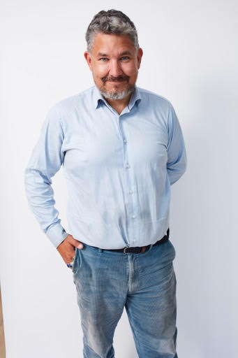

Senior programleder der eksekverer compliance- og transformationsprogrammer i regulerede miljøer. Pharma, finans, telekom, offentlig sektor. 20+ års erfaring med at vende strandede programmer til målbar levering. Aktuelt tilgængelig for interim-opgaver i Nordeuropa.

Søger min næste fuldtidsopgave: Programleder, Compliance Programme Manager eller PMO Lead. 6–12 måneder. Pharma, finans, telekom, offentlig sektor. København-baseret, Nordeuropa. Dansk & engelsk.
Governance-audit. Interessentkortlægning. Beslutningsrettigheder afklaret. Genopretningsplan på papir.
Leverancekadence kører. Leverandørtilpasning. SteerCo-rapportering etableret. Risici under kontrol.
Fuldtid, on-site eller hybrid. Freelance via Coys. Omgående start muligt.
30 spørgsmål. 6 dimensioner. 5 minutter. Få jeres score og en personlig handlingsplan.
Klassificér dit AI-system på 3 minutter. Få risikokategori, krav, tidsplan og PDF-rapport.
Jeg kører programmer som andre har givet op på. Datacentermigrationer med 27 delplaner. Carve-outs på tværs af fire lande. Compliance-deadlines som ingen troede var opnåelige. Jeg bringer en operatørs disciplin til governance — ikke en konsulents slidedeck.
Dansk-britisk, baseret i København. Flydende i dansk, engelsk og svensk. Udvalgte klienter inkluderer pharma, telekom, finansiel infrastruktur og offentlig sektor på tværs af Norden og Europa. Advisory Board-medlem i en schweizisk AI-startup. Aktuelt fokuseret på krydsfeltet mellem AI-regulering og programeksekvering.
20+ års erfaring med at køre programmer — ikke reviewe dem. Jeg sidder i stolen, ejer planen og rapporterer til bestyrelsen.
Jeg designer governance-strukturen og leverer derefter inden for den. Ingen overdragelsesgab mellem strategi og virkelighed.
Pharma (GxP), finans (NIS2), telekom, offentlig sektor. Jeg ved hvad revisorer spørger om, og hvad bestyrelser har brug for at høre.
Lige tilpas i SteerCo med C-suite præsentation og i war room med leverandørtilpasning kl. 2 om natten.
Gentagne gange hentet ind for at redde programmer i krise. 16-team turnarounds, forsinkede carve-outs, brudt governance.
EU AI Act, NIS2, GxP — jeg omdanner lovkrav til strukturerede programmer med milepæle, ejere og deadlines. Compliance er levering, ikke teori.
Opbygning af governance-frameworks der rent faktisk virker i praksis — ikke kun på papir. Fra policy-design til operationel implementering på tværs af EU AI Act-landskabet.
NIS2, ISO 27001, GxP — navigation i krydsfeltet mellem cybersikkerhedsdirektiver og branchespecifik regulering. Praktisk compliance for komplekse organisationer.
Ledelse af storskala IT-transitioner og organisatorisk forandring. Omdannelse af strategi til eksekvering med programledelsesdisciplin og interessenttilpasning.
Dyb operationel viden om infrastrukturmiljøer — fra datacentre til cloud-migration, med et sikkerhedsførst-mindset forankret i regulerede industrier.
De fleste AI- og transformationsprogrammer fejler ikke på grund af teknologi. De fejler fordi beslutningsrettigheder, ansvar og risikoejerskab er uklare.
Jeg arbejder i det krydsfelt — hvor governance-strukturer møder leveringsvirkelighed. Afklaring af hvem der ejer hvad, hvem der beslutter hvad, og hvem der er ansvarlig når det gælder.
Fuld migration af mainframe- og datacenterinfrastruktur mellem to strategiske leverandører. Forhandlede 27 delplaner, planlagde og eksekverede cutovers, styrede hypercare. Koordinerede hardware-indkøb, dark fibre-forbindelser og SD-WAN-integration.
Overtog et forsinket carve-out-program. Ni projektspor, fire lande, SAP/MES-afhængigheder, GxP-valideringskrav. Genplanlagde scope, gentilpassede leverandører, kørte move groups 1–8 og rapporterede ugentligt til SteerCo.
Hentet ind for at redde et transitionsprogram i krise. 7 infrastrukturspor, 16 teams på tværs af 4 lande, ingen klar governance. Etablerede beslutningsstruktur, fiksede planen, styrede daglig status og ugentlig SteerCo.
Definerede og implementerede Active Directory-tiering på tværs af flere hospitalsmiljøer. Afholdt workshops med infrastrukturarkitekter og sikkerhedsspecialister. Risikovurderinger, dokumentation og SteerCo-rapportering for NIS2-compliance.
En klar servicetrappe fra gratis selvvurdering til compliance-programledelse. Start hvor I er, gå videre i jeres tempo.
Gratis onlineværktøj. 30 spørgsmål, 6 dimensioner, øjeblikkelig PDF-rapport med modenhedsscore og handlingsplan.
Gratis hands-on workshop (værdi DKK 35.000). Risikoklassifikation, governance-framework, 90-dages roadmap. To spor: scale-ups og offentlig sektor.
Artikel 4-kompatibel træning for 8-20 deltagere. Rollebaseret, med branchecases og personlige kompetencebeviser. DKK 15.000-25.000.
Struktureret vurdering af jeres AI-compliance-status — gennemført med certificerede partnere. Ledelses-rapport, handlingsplan, business case. DKK 45.000-75.000.
Programledelse af jeres AI-compliance-rejse. Milepæle, interessentkoordinering, leverandørstyring, revisionsforberedelse. DKK 150.000-350.000.
Jeg tager fuldtids programopgaver, typisk 6–12 måneder. Hvis governance er brudt eller leveringen er gået i stå, kan jeg hjælpe.
Tilgængelig nu for programledelse i regulerede miljøer i Nordeuropa.